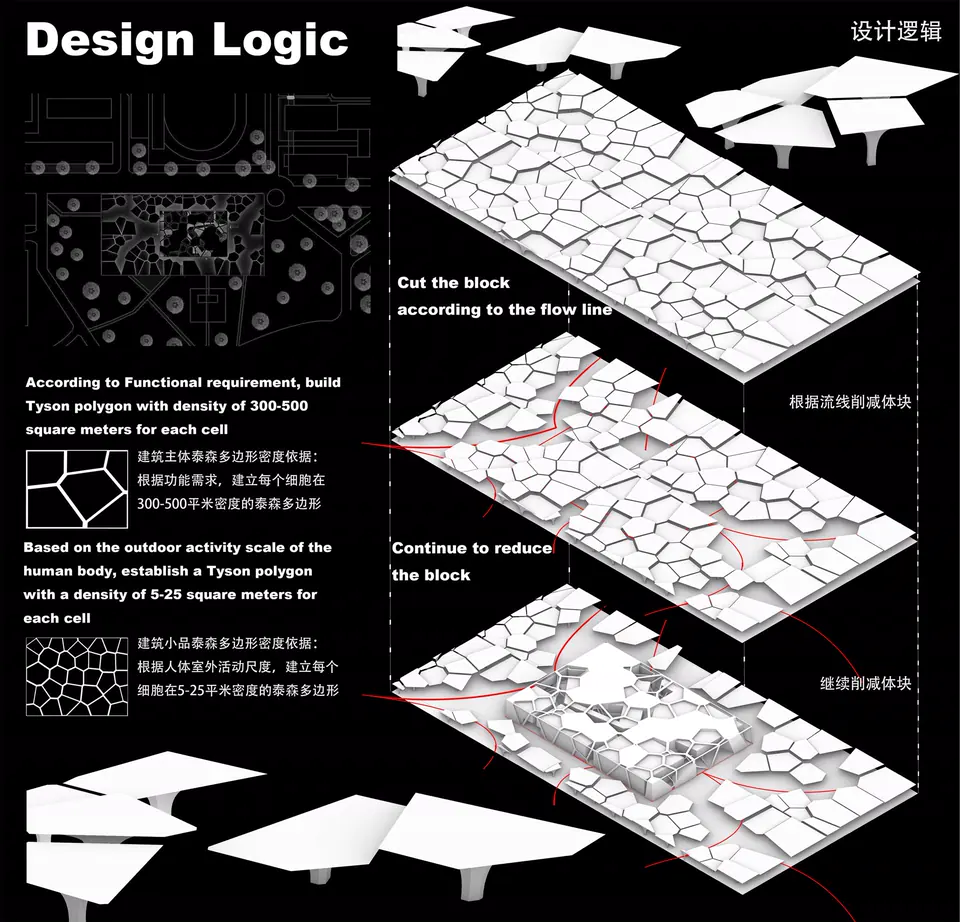
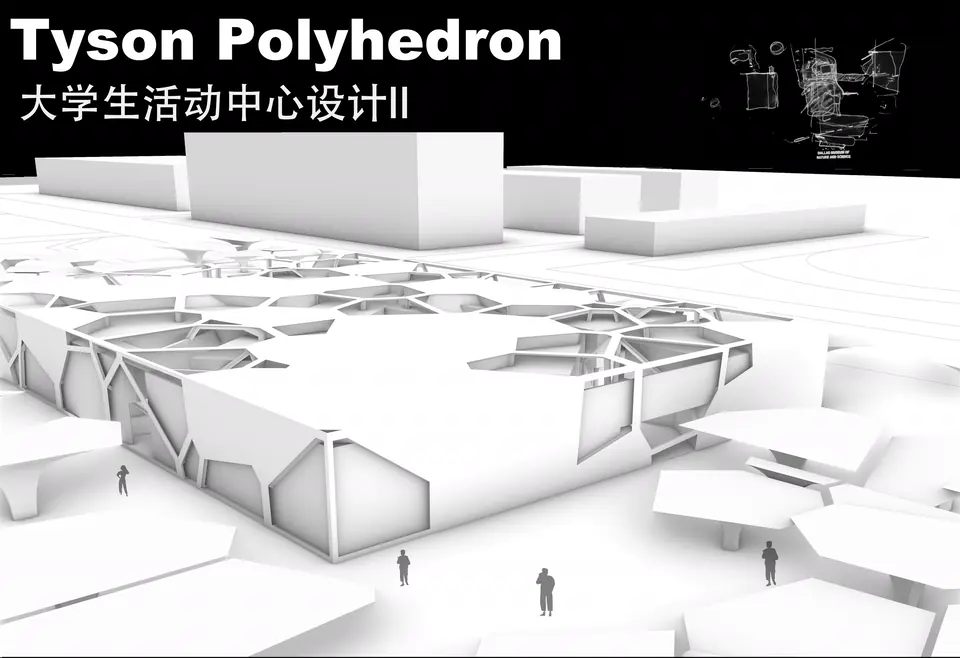
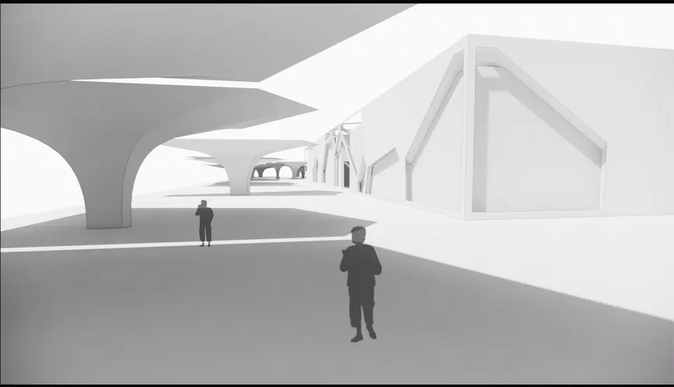
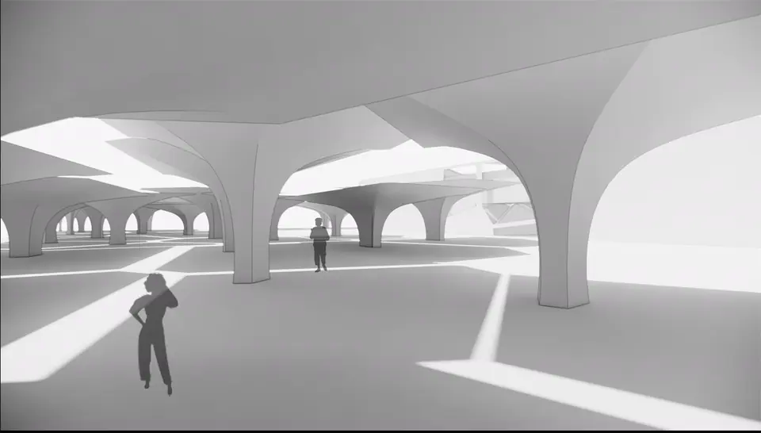

PROJECT 02
大学生活动中心Student Activity Centre
泰森多边形与校园活动路径。Voronoi cells shaped by campus movement.
主效果图MAIN RENDERING
由泰森多边形细胞生成的建筑主体在校园中展开，通透的界面让各类活动可见、可达。
The main volume, generated from Voronoi cells, opens into the campus; transparent edges keep its activities visible and accessible.

设计逻辑DESIGN LOGIC
泰森多边形的密度依据：建筑主体根据功能需求，建立每个细胞在 300–500 ㎡ 密度的泰森多边形；建筑小品则根据人体室外活动尺度，建立每个细胞在 5–25 ㎡ 密度的泰森多边形。
Density rules of the Tyson polygon: for the main volume, cells are sized by function at 300–500 m²; for outdoor pieces, cells follow the scale of human outdoor activity at 5–25 m².


体块与爆炸结构Massing & Exploded Structure
体块沿流线逐步削减，形成与场地和活动路径呼应的最终体量；爆炸图进一步分解多边形骨架、面层、主体材料与最终体块的关系。
The mass is cut back along movement lines to answer the site and its activity paths. The exploded view then separates the polygonal skeleton, surfaces, primary building materials and final volume.

室内外效果图INDOOR & OUTDOOR RENDERINGS
由多边形细胞生成的空间在不同场景中的氛围：大台阶与架空通道把学生引入建筑，室内外活动彼此渗透。
Spaces generated from polygonal cells in different scenes: wide steps and the elevated passage draw students in, letting indoor and outdoor life interpenetrate.





